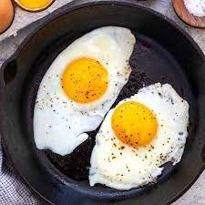

Fried Eggs

Farm Fresh Fried Eggs
Whenever my son wakes up, he always wants one thing for breakfast and one thing only...a fried egg.
Hey, look at me, I am a regular ol' blogger.
Ingredients
- an egg
- 1 Tbsp Butter
- a pan
Directions
- Place butter in a pan and turn to med/high heat until it starts to sizzle
- When sizzling, crack egg over pan
- Seaon with S&P
- When the white is mostly cooked, flip egg for a few seconds
- Take out of pan and enjoy